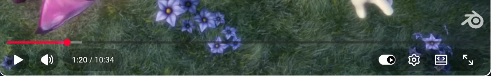
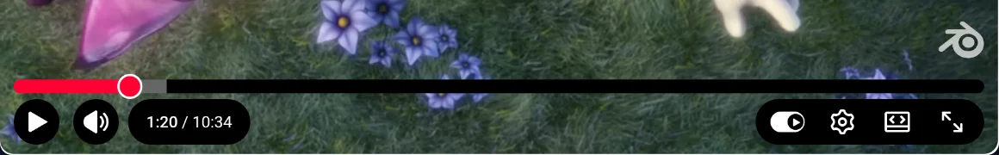

YouTube Controls is ready
Recommended settings are already on: strong contrast, a bigger progress bar and easier-to-read subtitles.


Change settings
Click the puzzle-piece icon in the toolbar and pin YouTube Controls. Click its icon to change the style, keep controls visible or restore YouTube's look.
Keyboard shortcuts
- Turn control enhancements on or off
- Switch to the next control style
- Keep controls visible on or off
You can change them in your browser's extension shortcut settings.